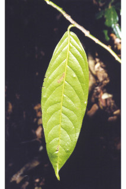
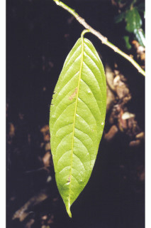

Images :

 

| Habit : | Medium sized trees , up to 30 m tall. |
| Leaves : | Leaves simple , alternate , distichous ; petiole 0.5-1.1 cm long, canaliculate , subglabrous ; lamina 13-25 x 4-7.5 cm, oblong-lanceolate , apex caudate - acuminate , base acute , margin entire , glabrous , subcoriaceous ; midrib raised above; secondary_nerves 10-12 pairs; tertiary_nerves reticulo-percurrent . |
| Inflorescence / Flower : | Flower in terminal or axillary fascicles of 1 to 3 together, pale green. |
| Fruit and Seed : | Berry , globose or oblong , about 7 cm long, seeds 8-10 in rows, compressed. |